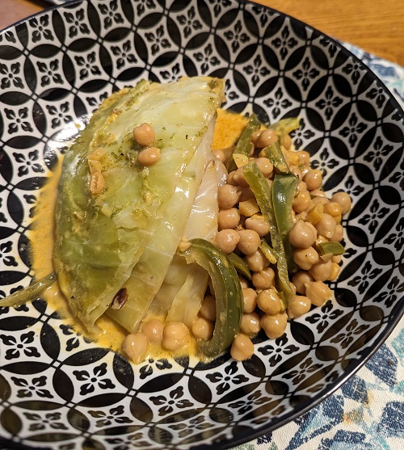
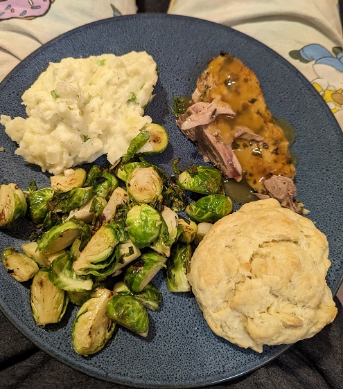
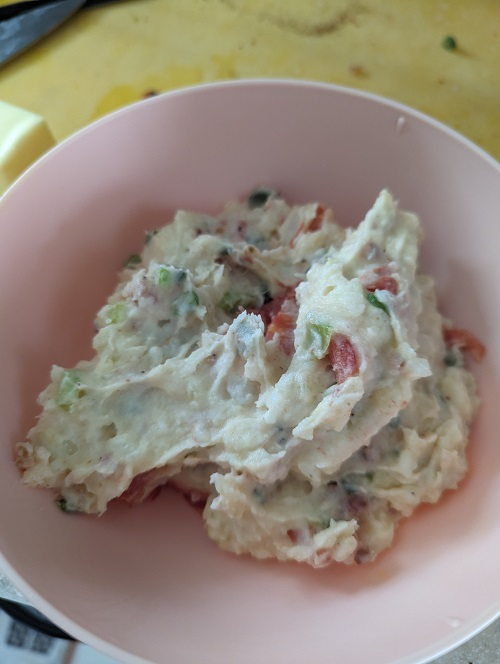
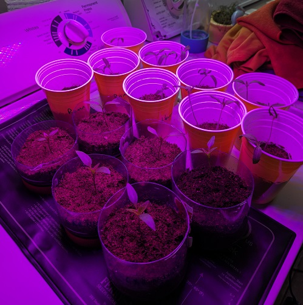

Latest Projects


Roasted duck with brussels and scratch biscuits
Michelle made the biscuits for this one and they turned out very satisfying, all gone in two days. I roasted the duck whole with some scratch stuffing and fresh herbs. Potatoes are whipped with parsley and butter, while the brussels are pan-fried until crispy.

